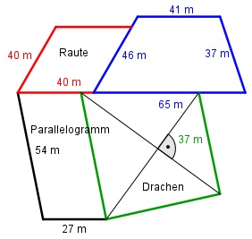

Aufgabe 170 Die 4 Wiesen sollen eingezäunt werden? Wie viel m Zaun braucht man, wenn zwischen benachbarten Wiesen nur ein Zaun gezogen wird?  l = 4 * 40 m + (46 m – 40 m) + 41 m + 37 m + + 65 m + 2 * 54 m + + 27 m + 2 * 37 m = 518 m
Aufgabe 170 Die 4 Wiesen sollen eingezäunt werden? Wie viel m Zaun braucht man, wenn zwischen benachbarten Wiesen nur ein Zaun gezogen wird?
